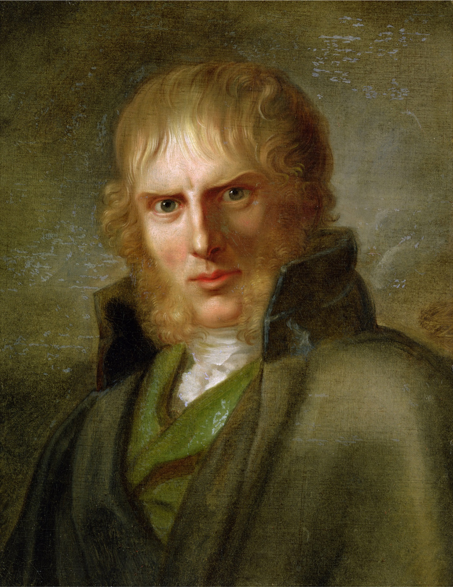

名画览
Caspar David Friedrich 1774.09.05 - 1840.05.07

Figure 1: 肖像画
19 世纪德国浪漫主义风景画家。他出生于瑞典波美拉尼亚的格赖夫斯瓦尔德镇，而当时的波美拉尼亚属于瑞典王国。格赖夫斯瓦尔德镇这里也是他开始学习艺术的起点。1798 年起，弗里德里希开始在哥本哈根学习。作为一个艺术家，他的主要兴趣是寄情自然，他往往通过象征性和反传统的工作来传达对自然世界一种主观情感化的反应。1920 年代，他的画作被表现主义者重新发掘。在 1930 年代和 1940 年代初超现实主义者和存在主义者经常从他的画中汲取灵感。
他一生都以浪漫，情怀、灵性追求的方式来表现风景画。他的母亲在他七岁的时候去世，而十三岁时，他的哥哥把他从溺水中救出，反倒送掉了自己的命。这些悲痛的经验为他本来已经敏感的天性带来更沉重的打击，自此，死亡、忧愁、自然等题材便成为他所迷恋的主题。他常常漫步于山林海滨，探索自然风景的主题。他有极端敏锐的观察力，又擅于表达光线与色彩的精微细节。他曾表示:“从一粒砂中也可以看到自然的神妙。”
他在 1809 年画的《橡树下的寺院》便是混合著死亡的题材于风景中。画中是一块荒芜的坟场，画面下方隐约可以见到几个僧侣正抬着一副棺木准备下葬。但是在几棵枯萎参天的橡树和残破的寺院下，这幅葬礼图几乎不可辨识，铅灰的天空把枯树照得只剩一株株黑影，而颓败的寺院只剩下一面墙，看起来像是一矗巨型的墓碑，整幅景致阴冷神秘，明净的光围把累赘的生命净化为一种灵性的境界；使这幅画充满了宗教的讯息。弗里德里希的作品强调尖锐的明暗对比和空无的精神表现，混合著古典主义的严谨技法和浪漫主义的情愫。他的风景画与歌德的小说、贝多芬的音乐，成为德国浪漫主义的佼佼者。
二战时期，希特勒使用了弗里德里希的《凝月》画作为纳粹宣传，因此在二战后的几十年弗里德里希的画作并不获重视。

Figure 2: Cairn in Snow, 1807

Figure 3: Abtei im Eichwald, 1810

Figure 4: Morning in the Riesengebirge, 1811

Figure 5: Cross and church in the mountains, 1812

Figure 6: Wanderer above the Sea of Fog, 1818

Figure 7: Chalk Cliffs on Rügen, 1818

Figure 8: Elbschiff in early morning fog, 1820

Figure 9: Day, 1821

Figure 10: Morning, 1821

Figure 11: Afternoon, 1821

Figure 12: Evening, 1821

Figure 13: The Tree of Crows, 1822

Figure 14: The Sea of Ice, 1823

Figure 15: The Cemetery, 1825

Figure 16: A Walk at Dusk, 1830

Figure 17: Mann und Frau den Mond betrachtend, 1835